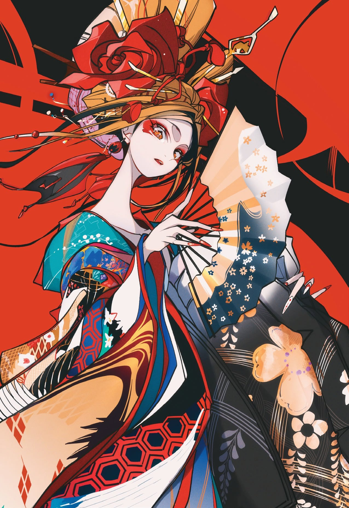

A · 高對比平塗設計
S01朱紅和風裝飾平塗
朱紅 / 墨黑 / 金赭 / 青綠
人物持扇，頭飾與衣裝帶有花卉、幾何及金色紋樣。黑色輪廓線包住大色面，皮膚陰影較簡潔；朱紅背景與黑色形狀形成強對比，青綠衣料提供冷色焦點。
查看風格分析與短片建議
構圖：直幅中近景；頭飾、長袖與扇面形成斜向交錯，人物臉部周圍保留較乾淨的淺色區域。
比較：重點是繁密圖案與平塗色塊的結合。與 11 的簡潔幾何平塗相比，01 的裝飾密度明顯更高。
固定風格：粗細有別的深色輪廓、大面積朱紅與墨黑、局部金赭和青綠、少量階梯陰影、裝飾性節奏。
可替換：和服、扇子、花朵與頭飾均屬可替換題材；可換成外套、樂器或都市道具。
動態建議：適合人物亮相、扇面開合、衣袖或髮帶緩慢飄動；鏡頭可緩推近。
待測試問題：紋樣與頭飾過密時，連續幀容易出現位置跳動；先固定主要圖案與髮飾數量。
展開並複製提示詞
中文風格核心
高對比裝飾性人物插畫，清晰且粗細有別的深色輪廓線，大面積朱紅與墨黑色塊，金赭及青綠作局部點綴，乾淨平塗與少量硬邊陰影，修長優雅的人物造型，裝飾紋樣集中於服裝及道具，臉部保持清楚簡潔，具有強烈的平面設計節奏。
English style block
Graphic decorative character illustration with crisp, varied dark contours, broad vermilion and ink-black color fields, selective ochre-gold and teal accents, clean flat fills and restrained hard-edged shadows. Elegant elongated forms, ornamental patterns concentrated on clothing and props, a clean readable face, and a strong rhythmic graphic structure.
避免偏離：避免全面柔焦、寫實皮膚毛孔、均勻鋪滿細節；金色點綴不必自動變成發光特效。
避免描述 · English
Avoid photographic skin pores, all-over soft focus, uniformly dense detail, and glowing effects on every gold accent.